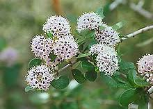

Rhamnaceae
Buckthorn Family
Rhamnaceae is a large, cosmopolitan family of trees, shrubs, and lianas (vines) found worldwide. They typically have simple leaves (alternate or opposite) with stipules, and small, often greenish or yellowish, 4- or 5-merous flowers. Key diagnostic features include the presence of a prominent nectar disc within the flower and stamens that are positioned opposite the petals (when petals are present). The fruit is most commonly a drupe. Several genera are ecologically important as nitrogen-fixers, while others are known for edible fruits, medicinal properties, or invasiveness.
Overview
The Buckthorn family, Rhamnaceae, encompasses about 55 genera and nearly 950 species distributed across almost all terrestrial habitats globally, from tropical rainforests to deserts and temperate woodlands. This diversity in habitat is matched by a diversity in growth form, including trees, shrubs, and woody climbers, many of which are armed with thorns or spines.
Several genera within Rhamnaceae have significant ecological roles. For example, many species of Ceanothus (California Lilacs) and related genera form symbiotic relationships with nitrogen-fixing bacteria (Frankia) in their roots (actinorhizal symbiosis), enriching nutrient-poor soils, particularly in western North America. Economically, the family includes species cultivated for edible fruits like Jujube (Ziziphus jujuba), medicinal uses such as Cascara Sagrada from Frangula purshiana (a laxative), ornamental plantings (Ceanothus), and dyes. However, some species, like Common Buckthorn (Rhamnus cathartica), have become problematic invasive weeds in certain regions.
Phylogenetically, Rhamnaceae belongs to the order Rosales, part of the "nitrogen-fixing clade" which also includes families like Rosaceae, Ulmaceae, and Fabaceae (though nitrogen fixation has evolved multiple times and is not present in all members).
Quick Facts
- Scientific Name: Rhamnaceae
- Common Name: Buckthorn Family
- Number of Genera: Approximately 55
- Number of Species: Approximately 950
- Distribution: Cosmopolitan.
- Evolutionary Group: Eudicots - Rosales
- Habitat: Diverse, from tropical forests to deserts and temperate regions.
Key Characteristics
Growth Form and Habit
Trees, shrubs, or lianas (woody vines). Many species are armed with thorns or spines, which can be modified stems or stipules.
Leaves
Leaves are usually simple (rarely pinnately compound), with margins entire or serrated/dentate. Arrangement is typically alternate, but sometimes opposite. Small stipules are present, though sometimes minute, deciduous, or modified into spines. Venation is usually pinnate, but some genera (e.g., Ziziphus, Ceanothus) have distinctive venation with 3-5 prominent veins arising from the leaf base.
Stems
Stems are woody.
Roots
Typical woody plant root system. Some genera (e.g., Ceanothus, Colletia, Discaria, Trevoa) form actinorhizal root nodules capable of nitrogen fixation via symbiosis with Frankia bacteria.
Sexuality and Inflorescence
Inflorescences are variable, often determinate, appearing as axillary or terminal cymes, fascicles (clusters), umbels, or sometimes flowers are solitary. Flowers are usually perfect (bisexual), but unisexual flowers occur in some species (plants then monoecious or dioecious).
Flowers
Flowers are typically small, actinomorphic (radially symmetrical), 4- or 5-merous, and often inconspicuous (greenish, yellowish, whitish). A key feature is the presence of a prominent nectar disc, which lines the hypanthium (floral cup) or surrounds the base of the ovary.
- Calyx: Consists of 4 or 5 sepals, typically triangular and valvate (meeting edge-to-edge) in bud.
- Corolla: Consists of 4 or 5 petals, or petals may be absent. When present, petals are typically small, often hooded or concave, inserted at the margin of the nectar disc, and characteristically positioned opposite the sepals (alternating with the sepals).
- Stamens: Consists of 4 or 5 stamens, positioned opposite the petals (and thus alternating with the sepals). The stamens are often enclosed or hooded by the petals. Anthers typically dehisce via longitudinal slits.
- Ovary: Superior or partly inferior (embedded in the nectar disc), composed of 2-4 fused carpels, forming a 2-4 locular ovary. Each locule typically contains one ovule. A single style is present, often with a 2-4 lobed stigma.
Fruits and Seeds
The fruit is most commonly a fleshy or dry drupe containing 1-4 stones (pyrenes). Less frequently, the fruit may be a capsule that splits open or a schizocarp that breaks into segments (mericarps), sometimes winged (samara-like). Seeds usually have a straight embryo and fleshy endosperm.
Chemical Characteristics
Various secondary metabolites are found, including cyclopeptide alkaloids, flavonoids, saponins, and notably anthraquinones (especially in Rhamnus and Frangula), which have laxative effects.
Field Identification
Identifying Rhamnaceae involves observing a combination of habit, leaf, and floral characteristics:
Primary Identification Features
- Habit: Tree, shrub, or liana, often thorny/spiny.
- Leaves: Usually simple, alternate or opposite, with small stipules (sometimes spiny).
- Flowers: Small, 4- or 5-merous, actinomorphic.
- Nectar Disc: Prominent disc usually present within the flower.
- Stamen Position: Crucially, the 4 or 5 stamens are positioned opposite the petals (if petals are present).
- Petals: Often small, hooded, or sometimes absent.
- Fruit: Most commonly a drupe.
Secondary Identification Features
- Leaf Venation: Pinnate, or sometimes 3-5 main veins from the base (Ceanothus, Ziziphus).
- Nitrogen Fixation: Presence of root nodules in certain genera (Ceanothus, etc.).
- Distribution: Cosmopolitan.
Seasonal Identification Tips
- Flowering Season: Varies greatly depending on species and climate (often spring/summer in temperate zones). Close examination of flower structure (stamen position, disc) is needed.
- Fruiting Season: Drupes are often conspicuous when mature.
- Vegetative State: Habit, leaf arrangement (alt/opp), presence of thorns/spines, and sometimes leaf venation can be helpful year-round.
Common Confusion Points
Rhamnaceae can be confused with several other families:
- Rosaceae (Rose family): Many Rosaceae are trees/shrubs/vines, often thorny, with simple alternate leaves and stipules. However, Rosaceae flowers typically have 5 distinct petals (usually not hooded), numerous stamens (>10), and diverse fruit types (pomes, achenes, follicles, drupes), but stamens are not opposite the petals.
- Celastraceae (Bittersweet family): Trees/shrubs/vines with simple leaves (often opposite). Flowers are small, 4-5 merous with a nectar disc, but stamens are alternate with the petals. Fruits are often capsules with brightly colored arillate seeds.
- Cornaceae (Dogwood family): Often opposite leaves. Flowers are 4-merous, often in dense heads or cymes, ovary is inferior, fruit is a drupe, but flower structure (stamens alternate petals) differs.
- Ulmaceae (Elm family): Trees/shrubs with simple alternate leaves, often asymmetrical base. Flowers are small, apetalous, wind-pollinated, fruit is a samara or nutlet. Different order (Rosales), but vegetatively similar sometimes.
The position of stamens opposite the small, often hooded petals (or opposite sepals if petals absent) combined with the nectar disc is the most reliable floral character for Rhamnaceae.
Field Guide Quick Reference
Look For:
- Tree/shrub/liana, often spiny
- Leaves usually simple, alt/opp, stipulate
- Flowers small, 4/5-merous
- Prominent nectar disc
- Stamens (4/5) opposite the petals
- Petals small, hooded, or absent
- Fruit usually a drupe
Key Variations:
- Habit (tree vs shrub vs liana)
- Leaf arrangement (alternate vs opposite)
- Presence/absence of thorns/spines
- Presence/absence of petals
- Fruit type (drupe vs capsule vs schizocarp)
- Nitrogen fixation (present in some genera)
Notable Examples
Rhamnaceae includes many well-known genera with diverse uses and ecological roles:

Rhamnus cathartica
Common Buckthorn
A large shrub or small tree native to Eurasia, widely introduced and now invasive in North America. Characterized by sub-opposite leaves, thorny twigs, small greenish flowers, and black drupes that have laxative properties (and stain). Disrupts native ecosystems.

Ceanothus spp.
California Lilacs
A large genus of shrubs and small trees, primarily from western North America. Known for their often abundant clusters (panicles or racemes) of small blue, purple, or white flowers. Many species are important nitrogen-fixers and are popular, drought-tolerant ornamental plants. Leaves often have 3 prominent basal veins.

Ziziphus jujuba
Jujube, Chinese Date
A small tree native to Asia, cultivated for thousands of years for its edible drupaceous fruit, which resembles a date when dried. Often has thorny branches and leaves with 3 prominent basal veins. Widely grown in warm temperate and subtropical regions.
Phylogeny and Classification
Rhamnaceae is a well-supported family within the large eudicot order Rosales. This order is highly diverse, containing families like Rosaceae (roses, apples), Ulmaceae (elms), Cannabaceae (hemp, hops), Moraceae (figs), and Urticaceae (nettles). Rhamnaceae belongs to the "nitrogen-fixing clade" within Rosales, a group where symbiotic nitrogen fixation with Frankia bacteria has evolved in several lineages (including Rhamnaceae, Elaeagnaceae, Rosaceae, and the Fabales order which is sister to Rosales).
The position of stamens opposite the petals is a key morphological synapomorphy (shared derived trait) supporting the monophyly of Rhamnaceae. Molecular data has largely confirmed traditional classifications within the family while refining relationships among genera and tribes.
Position in Plant Phylogeny
- Kingdom: Plantae
- Clade: Angiosperms (Flowering plants)
- Clade: Eudicots
- Clade: Rosids
- Order: Rosales
- Family: Rhamnaceae
Evolutionary Significance
Rhamnaceae is significant in evolutionary studies due to:
- Stamen Position: The consistent position of stamens opposite the petals is a strong diagnostic feature and an interesting developmental trait.
- Nitrogen Fixation: The evolution of actinorhizal nitrogen fixation in several genera provides a key example of symbiotic adaptation within the Rosales order, contributing significantly to ecosystem function in nutrient-poor soils.
- Cosmopolitan Distribution & Diversity: The family's presence worldwide and its range of growth forms make it a good group for studying biogeography and adaptive radiation.
- Economic and Ecological Roles: Includes species important for fruit, medicine, ornament, nitrogen cycling, and also problematic invasive species, showcasing diverse interactions with humans and ecosystems.